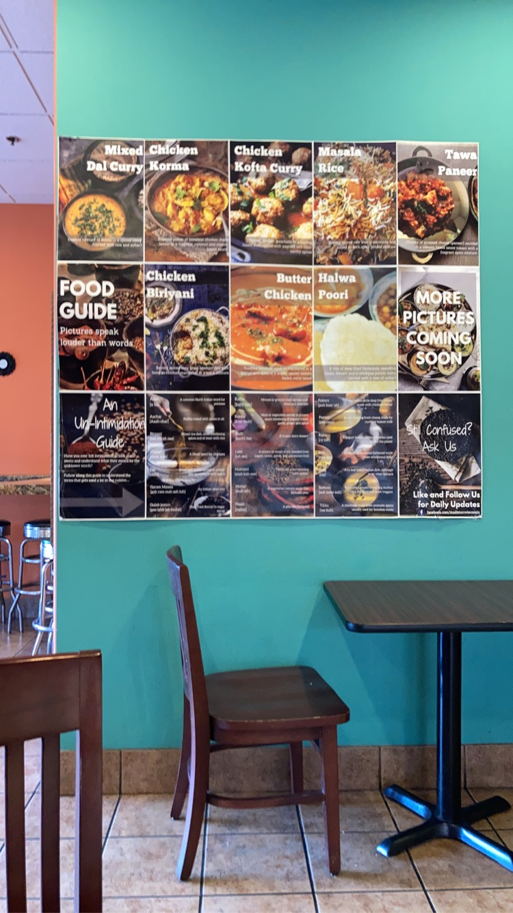

My Favorite Cuisine
Indian Cuisine
I love Indian food because of its libreal use of spices
and because its quite similar to the food I ate growing up.

Top 3 Indian Dishes
- Butter Chicken
- Biryani
- Paneer Tikka
Common Ingredients
- Curry Powder
- A spice that is used a lot in indian dishes
- Garam Masala
-
A mix of ground spices that has an amazing aroma and can be used in
almost every dish.
- Butter
- A delicious source of fat